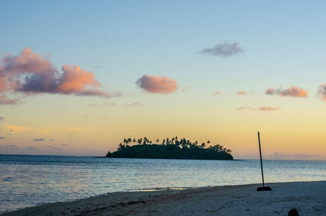
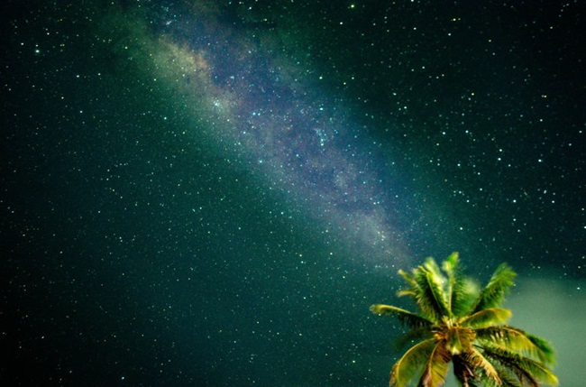
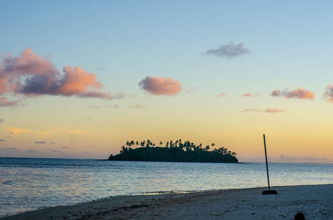
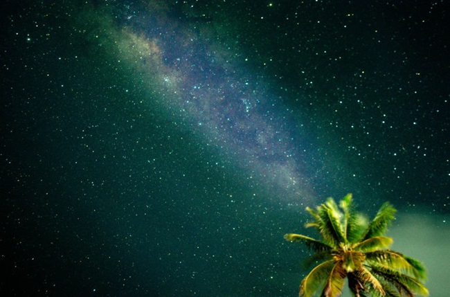

Avarua: The bustling town center and central hub of Rarotonga, where you can experience the island's vibrant culture and nightlife.
Beaches: Visit stunning white-sand beaches and crystal-clear lagoons of Muri Beach, Avarua Beach, and Blackrock.
Mountains: Venture into the island's lush interior and hike through the breathtaking mountain landscape of the Cross Island Hike. Learn more about the island's natural beauty, the land, the sky, and one of the world's rarest birds.
Food:Discover the unique flavors of authentic Cook Island cuisine, a delightful fusion of Polynesian and European influences, showcasing the island's abundant fresh produce and seafood.
Population: 10,898
Island Size: 67.1 sq.km (25.9 sq. mls)
Island Size: 67.1 sq.km (25.9 sq. mls)